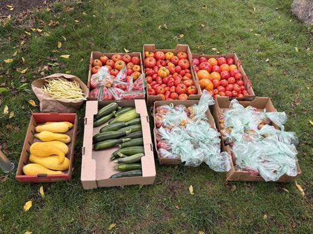
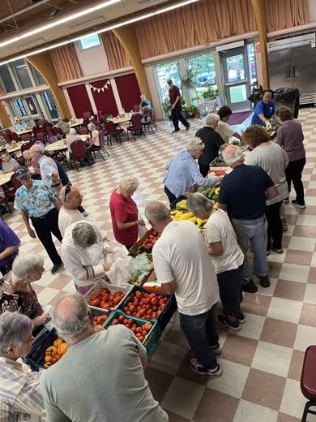

Chelmsford Grow-a-Row is a community-driven initiative: neighbors, churches, farms, and local businesses grow an extra row of vegetables in their gardens and donate the harvest to the food-insecure of our community.
As part of the Chelmsford Age-Friendly initiative, the program fosters healthy, nutritious food choices — especially for our elderly population. All Grow-a-Row produce is grown using organic methods, with no chemical sprays for pests or disease.


With the season complete, 2026 finished ahead of 2025 on donations, weight, and value.
The 2026 season ran June 24 through September 22 and surpassed 2025's full-season totals by 365 pounds and $1,158 — the program's largest harvest on record.
Twenty-nine varieties of produce were donated this season. The leading crops, by weight:
Thirty-one donors contributed this season — backyard gardeners, the Grow-a-Row community garden, the Congregational Church of North Chelmsford, local farms such as Parlee's, and corporate partners, notably Brooks Automation, whose employee garden gave more than 300 pounds across 160 separate donations. The donor count came in slightly below last year's 35 while giving per donor grew; welcoming new growers is a natural goal for 2027.
Every donation is now weighed and logged in a purpose-built tracking application, giving the program consistent, verifiable records and same-day visibility into what each receiving organization gets.
Produce is weighed at collection and valued at the market price per pound in effect on that date. Servings assume 2.5 servings per pound of fresh produce; meal equivalence assumes $3.00 per meal. Delivery shares reflect distributions logged in the tracking system this season, rounded to the nearest percent.
We thank the Select Board for its continued support of the Age-Friendly initiative this program proudly serves — and the volunteers and donors who make it all possible.